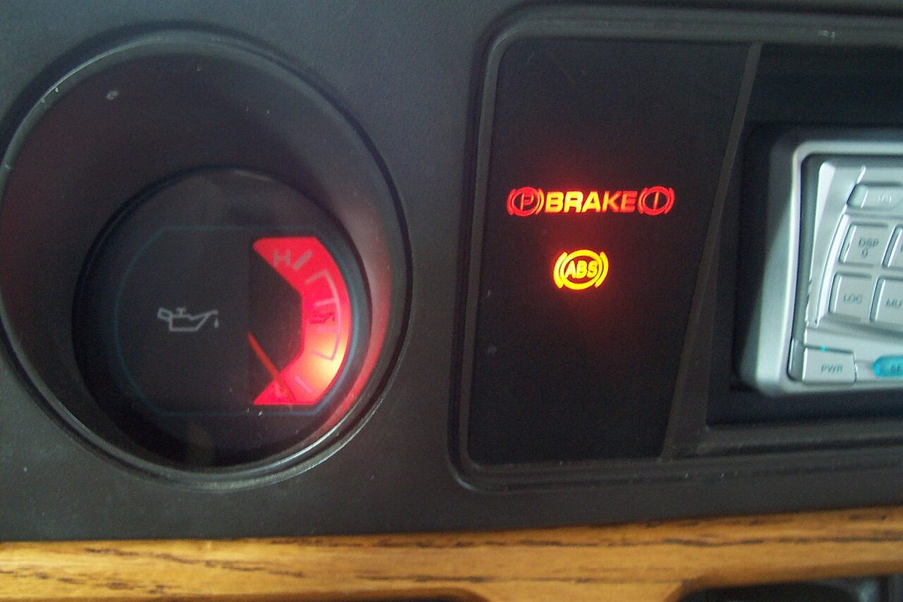

Poradňa autoservisu autoZ
Svieti kontrolka bŕzd
Červená kontrolka s výkričníkom v kruhu (pri niektorých autách nápis BRAKE) upozorňuje na zatiahnutú ručnú brzdu alebo na problém v brzdovej sústave. Brzdy sú najdôležitejší bezpečnostný systém auta, preto túto kontrolku neodkladajte.


Môžem jazdiť?
Zastavte na bezpečnom mieste a ďalej nejazdite. Skontrolujte hladinu brzdovej kvapaliny. Ak je pod minimom, brzdový pedál je mäkký alebo ide hlbšie, auto nechajte odtiahnuť. To isté platí, keď svieti kontrolka bŕzd spolu s ABS.
Platničky sú na hranici opotrebenia. Brzdy zatiaľ fungujú, ale objednajte sa na výmenu a nečakajte s tým dlho – inak sa poškodia aj kotúče. Pri škrípaní kovu na kov alebo zhoršenom brzdení ďalej nejazdite.
Čo kontrolka bŕzd znamená
Červená kontrolka bŕzd má pri väčšine áut dve úlohy:
- Zatiahnutá ručná (parkovacia) brzda – kontrolka svieti, kým brzdu neuvoľníte. Ak svieti aj po úplnom uvoľnení, nejde o ručnú brzdu.
- Nízka hladina brzdovej kvapaliny – v nádobke pod kapotou je plavákový spínač. Hladina klesá postupne s opotrebením platničiek, prudký pokles však znamená únik.
Pri niektorých autách tá istá kontrolka hlási aj chybu rozdeľovania brzdnej sily (najčastejšie spolu s kontrolkou ABS) alebo poruchu elektrickej parkovacej brzdy. Elektrická parkovacia brzda má často vlastnú, oranžovú kontrolku. Presný význam je v návode k vozidlu.
Opotrebenie platničiek hlási pri autách so snímačom zvyčajne samostatná oranžová kontrolka. Nie všetky autá snímač opotrebenia majú.
Najčastejšie príčiny
| Príčina | Čo si môžete všimnúť | Čo s tým |
|---|---|---|
| Zatiahnutá alebo nie úplne uvoľnená ručná brzda | kontrolka zhasne po uvoľnení | uvoľniť; ak nezhasne, skontrolovať spínač ručnej brzdy |
| Nízka hladina brzdovej kvapaliny pre opotrebované platničky | hladina blízko minima, platničky tenké | skontrolovať platničky a kotúče, nie len doliať |
| Únik brzdovej kvapaliny – hadica, trubka, strmeň, valček | mäkký pedál, mokré miesto pri kolese, prudký pokles hladiny | nejazdiť, auto odtiahnuť |
| Opotrebované platničky (oranžová kontrolka so snímačom) | škrípanie, kontrolka opotrebenia | výmena platničiek, kontrola kotúčov |
| Chyba rozdeľovania brzdnej sily / ABS | svieti aj kontrolka ABS | nejazdiť, diagnostika |
| Porucha elektrickej parkovacej brzdy | hlásenie na displeji, brzda sa neuvoľní alebo nezatiahne | diagnostika, pri niektorých autách servisný režim pri výmene platničiek |
Prehľad je orientačný, význam kontroliek sa podľa výrobcu líši.
Čo urobiť, keď svieti kontrolka bŕzd
- Skontrolujte, či je ručná brzda úplne uvoľnená.
- Ak kontrolka svieti ďalej, zastavte na bezpečnom mieste.
- Pod kapotou pozrite hladinu brzdovej kvapaliny v nádobke (značky MIN a MAX).
- Ak je hladina pod minimom alebo je pedál mäkký, nejazdite – auto nechajte odtiahnuť.
- Brzdovú kvapalinu len nedolievajte bez zistenia príčiny. Dajte skontrolovať platničky, kotúče a tesnosť sústavy.
Prečo nestačí brzdovú kvapalinu len doliať
Pri opotrebovaní platničiek sa piesty v strmeňoch vysúvajú a v nádobke ubúda kvapaliny. Klesnutá hladina je tak často znakom tenkých platničiek. Ak kvapalinu len dolejete, kontrolka zhasne, ale opotrebenie ostane. Ak hladina klesla pre únik, doliatie problém nevyrieši a brzdy môžu zlyhať.
Ak svieti aj kontrolka ABS, pozrite kontrolka ABS. Všetky kontrolky podľa farby nájdete na hlavnej stránke svietikontrolka.sk.
Časté otázky
Môžem jazdiť, keď svieti kontrolka bŕzd?
Ak svieti červená kontrolka bŕzd pri uvoľnenej ručnej brzde, zastavte a skontrolujte hladinu brzdovej kvapaliny. Pri nízkej hladine, mäkkom pedáli alebo súčasne svietiacej kontrolke ABS nejazdite a auto nechajte odtiahnuť.
Prečo svieti kontrolka bŕzd, keď je ručná brzda dole?
Najčastejšie pre nízku hladinu brzdovej kvapaliny, ktorá môže súvisieť s opotrebovanými platničkami alebo s únikom. Môže ísť aj o spínač ručnej brzdy alebo chybu brzdového systému.
Stačí doliať brzdovú kvapalinu?
Nie. Treba zistiť, prečo hladina klesla – či ide o opotrebované platničky, alebo o únik. Pri úniku môžu brzdy zlyhať.
Aký je rozdiel medzi červenou a oranžovou kontrolkou bŕzd?
Červená zvyčajne znamená ručnú brzdu alebo problém s brzdovou kvapalinou či brzdovým systémom. Oranžová býva pri autách so snímačom kontrolka opotrebenia platničiek alebo chyba elektrickej parkovacej brzdy.
Kde v Trenčíne skontrolujú brzdy?
V autoservise autoZ na ulici gen. M. R. Štefánika 6670/19 v Trenčíne, pri Kauflande. Objednať sa môžete na 0910 606 999 alebo na autoz.sk/rezervacia.
Potrebujete poradiť?
Kontrolu a opravy bŕzd robíme v autoservise autoZ v Trenčíne. Zavolajte alebo sa objednajte online. Fotku palubnej dosky môžete poslať aj na WhatsApp.
autoZ – autoservis Zelman · gen. M. R. Štefánika 6670/19, 911 01 Trenčín (pri Kauflande) · 0910 606 999 · Po–Pi 8:00–16:30 · www.autoz.sk · Brzdy Trenčín · Príprava na STK Trenčín